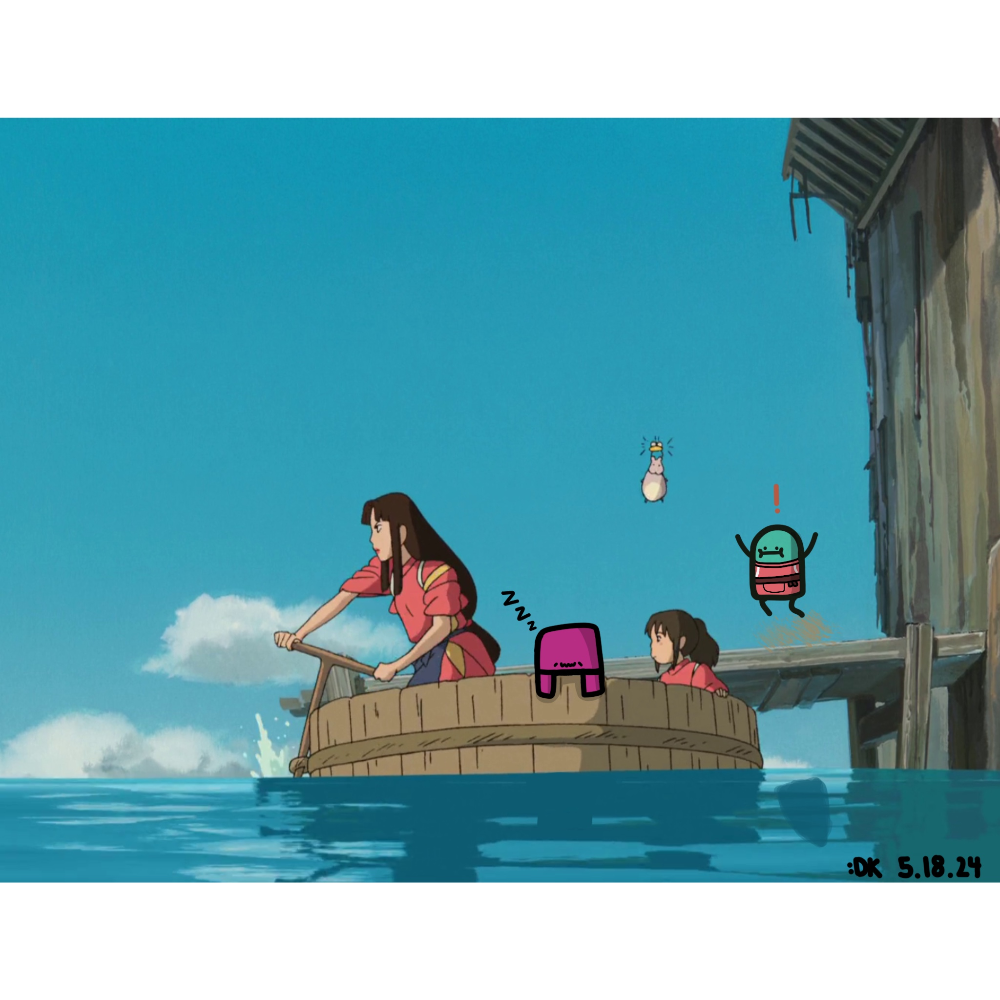
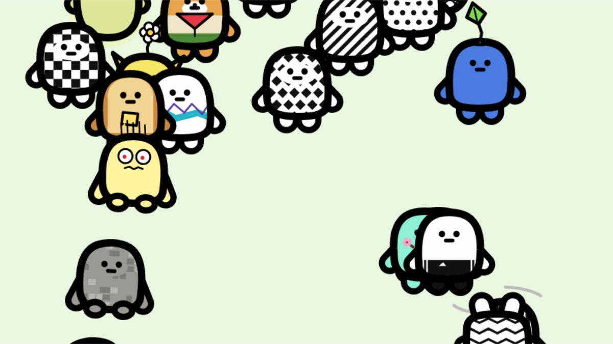
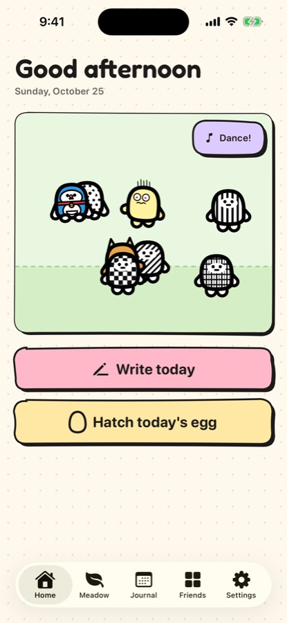

Most of this month so far has gone into glhf grow, a daily journal app where each day you write becomes a little character that then wanders around a meadow. It started at the end of October as an iOS app in SwiftUI, with the sprites generated rather than drawn by hand, so a new skin is a few numbers rather than a new file.

November opened with a performance pass on the meadow,
which is the screen doing the most work: every character on it is
animating at once. Lookups now happen once per change rather than once
per frame, every sprite shares one timeline instead of keeping its
own, and entries and eggs are dictionary reads. Phone builds are
compiled optimized now too, with the debug menu kept in so a real
device build is still testable.
On top of that, ambience in every theme — each
meadow theme now has its own moving background, by day and by night —
and a hand mode that lets you drag characters around,
which also had to stop taps from opening that day's journal entry
while it is on. Races got gold, silver and bronze medals that pop up
beside each racer as they finish. I also wrote up an end-to-end
encryption proposal for the next phase, since the whole point of a
journal is that nobody else reads it.

The small fix I liked most: on a day's page the egg card's tap target had been the whole row, so it sat over the character's name and you could not read it. The button is just the card now. There is also a test for looking at last month's journal during the first days of a new month, which is exactly the sort of thing that works all year and breaks on the 1st.
Back to glhf-chess for a week, and mostly to fix how
it ships. The server half of the game was being deployed by hand
through a GUI window, which is why it quietly sat undeployed — a fix
built weeks earlier had never actually reached the environment. It
deploys from a single menu item now, all nine
scripts at once.
Two things that window hides, learned the hard way. Its own deploy
call throws unless the window is open, so the right move is to skip it
and call what it calls. And batchmode simply cannot do
this — there is no Unity Cloud session in a headless editor,
so the gateway rejects the request outright. I had written an
env-var guard, a timeout and an editor-loop pump to support a
service-account key that does not exist; all of that is cut. The
finding stays in the doc for whoever wires up the CLI later.
I also reviewed the match screen properly, which took three attempts
because the emulator kept wedging — two emulators on an 8GB machine,
not the game. The thing it found:
the two player names sat on different baselines. Both
clock labels are centred in a fixed box, but the number of lines
changes with the turn — the side to move reads "Player One / to move"
while the other is just "Player Two" — so the names drifted apart and
back as play went on. They are top-aligned now, so the first line
stays put wherever the second one goes. Timed matches always had two
lines each, which is why it never showed up before.